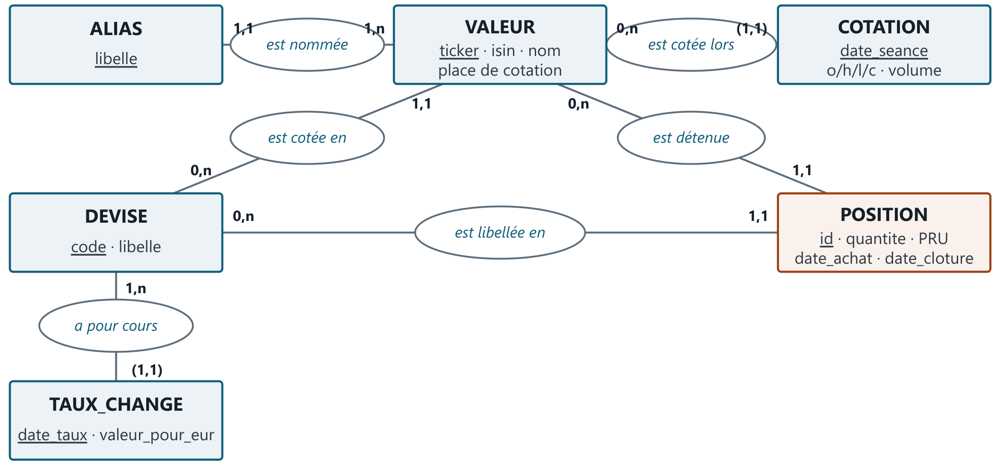

| Acteurs | moi, développeur et responsable de traitement ; l'utilisateur, un investisseur particulier qui suit son portefeuille ; les composants qui lisent les données : les nœuds de l'agent, l'écran web et une passerelle MCP |
| Objectifs | fonctionnels : dix ans de cours pour 111 valeurs, un portefeuille valorisé en euros, des anomalies de marché repérées, le contexte macro et l'actualité · techniques : extraire depuis les cinq types de sources, stocker dans une base modélisée avec Merise, servir le jeu par une API REST authentifiée |
| Environnement | Windows 11 · Python 3.14 sur le poste, 3.13 en intégration continue · PostgreSQL 18 · Spark 4.2.0 sur JDK 21 · Docker Compose · Git et GitHub Actions |
| Budget | dépenses au 31/10 : 259,34 € et 11,42 $ (dont 0,97 $ d'OpenRouter), provisoire · mon travail, à part : 25 200 € HT (63 journées estimées × TJM de 400 € HT) · fonctionnement : 7,19 € et environ 2,31 $ par mois (10 briefings et 5 questions par jour) · budget détaillé |
| Contraintes | Smart App Control : ni pip.exe ni environnement virtuel, tout par python -m · RGPD sur les positions |
| Organisation | branche develop, fusion vers main par pull request relue · un livrable = un tag que GitHub interdit de déplacer · une preuve par compétence dans evidence/, écrite au fil de l'eau |
| Planification | collecte et qualité en juillet → base et requêtes en août → collecte chaque soir depuis le 24 août → INC-005 le 27 septembre → chapitre « Données » validé par le formateur le 3 octobre → remise le 5 novembre |
Périmètre : l'extraction, l'agrégation, le stockage, l'interrogation et la mise à disposition des données ; l'agent, le briefing et l'interface relèvent d'E3 et d'E4.
| Brique | Choix | Pourquoi |
|---|---|---|
| Base | PostgreSQL 18 | contraintes dans la base, LATERAL, plans d'exécution mesurables |
| Big data | Spark 4.2.0, Parquet | nommé par le référentiel ; format en colonnes, partitionné par année |
| API | FastAPI | contrat OpenAPI généré par le code |
| Services externes | BCE, FRED, Yahoo Finance, flux RSS, Boursorama | gratuits ; une seule clé (FRED), hors de Git |
| Programmation | Python et SQL · aucun secret dans le code · requêtes SQL paramétrées seulement · une source en panne n'arrête pas les autres · une structure inattendue lève une exception nommée · tests écrits avant le code : 1 732 collectés ; le 24/10 en intégration continue, 1 700 réussis, 30 ignorés, 2 échecs attendus, couverture 96,32 % | |
| Accès et disponibilité | lecture par l'API, avec une clé ; l'API reste disponible quand une source tombe, car la base garde l'historique déjà chargé | |
La question du lecteur : d'où viennent les données, et que se passe-t-il quand une source tombe ?
| Type exigé | Source réelle | Ce qu'elle apporte, et la difficulté rencontrée |
|---|---|---|
| Service web | BCE, FRED, Yahoo Finance | taux de change, trois séries macro américaines, cours de 108 valeurs actives ; collecte incrémentale et rejouable |
| Page web | Boursorama | cours de séance ; robots.txt lu d'abord ; si la page change, le code lève StructurePageModifiee au lieu de rendre un vide |
| Fichier | export de courtier | positions, inventées en démonstration sur des sociétés réellement cotées ; quatre pièges : « ; », encodage cp1252, nombres français, en-têtes variables |
| Base de données | PostgreSQL relue | requêtes paramétrées ; un rôle en lecture seule, rita_lecture, pour les outils externes |
| Big data | Parquet lu par Spark | dix ans de cotations, 11 partitions au total, une par année (partie 6) |
En complément, trois flux RSS de presse : 2 314 articles, chacun contrôlé contre l'injection de prompt avant d'entrer en base. Le schéma complet de la collecte, des sources à la base, est en annexe, en pleine page.
VIRI.PA), et une ligne de
positions dans le fichier de démonstration (data/positions-exemple.csv, ligne 11).La collecte du soir, pipelines/ingest.py, versionnée dans le dépôt comme tout le code, tourne à 19 h par le planificateur de Windows. J'y ai fait deux choix. Chaque
étape (taux, macro, cotations, articles, page web, indexation) valide son propre commit : si la page web tombe, les taux sont
déjà enregistrés. Et une étape qui ne reçoit rien alors qu'un appel a échoué se déclare en échec : quatre devises en échec
laissaient l'étape des taux « réussie » sans une ligne écrite ; j'ai corrigé, puis étendu la règle aux cotations, au RSS et à la
page web le 24/10. Le script suit la structure attendue : point de lancement en ligne de commande, connexion ouverte une fois,
une fonction par source, erreurs tracées sans arrêter les suivantes, bilan par étape, sauvegarde par étape.
Résultat mesuré : du 24 août au 2 octobre, 40 journaux, dont 7 coupés par l'arrêt du poste et deux soirs d'articles
perdus. Depuis le 3 octobre, chaque soir écrit un manifeste JSON (versions, comptages, erreurs) : du 3 au 23 octobre,
21 soirs sur 21, dont 19 complets et 2 partiels (evidence/C1/).
La limite. Un soir où le poste est éteint, il n'y a pas de collecte ; les cours se rattrapent, les articles de ce soir-là sont perdus.
La question du lecteur : peut-on se servir de ces données sans cacher leurs défauts ?
Avant de dessiner la base, j'ai mesuré le jeu de dix ans (juillet 2026, bigdata/explorer.py) : aucune valeur
manquante, mais plusieurs défauts. Un briefing construit dessus en aurait hérité ; je ne voulais ni les ignorer, ni les effacer
sans trace.
VIRI.PA : la collecte avait donc chargé deux fois la même série de cours. Le code faisait ce qu'on lui demandait ;
c'est l'hypothèse « une ligne de l'univers = une valeur cotée » qui était fausse. J'ai fait deux corrections distinctes. Le
dédoublonnage : une seule cotation par ticker et par date, avant l'insertion (db/importer.py:152). Le
rattachement des libellés : les deux renvoient à la seule valeur VIRI.PA, par une entité ALIAS (partie 5). Résultat : 2 560 lignes écartées, 273 608 insérées, 112 alias pour 111 valeurs
(evidence/C3/preuve-dedoublonnage-cgg.md).Pour le reste, une seule règle : garder, marquer, expliquer. STLAP.PA, qui porte 1 142 des 1 533 clôtures incohérentes, est
marquée « incohérente » : les classements l'excluent, la valorisation l'affiche avec son statut (db/importer.py:54).
Le cours de 7 156 748 € d'ALJXR.PA vient d'un regroupement d'actions rétro-ajusté par le fournisseur : gardé et documenté. Les
séances à volume nul restent ; la requête des volumes anormaux exige une moyenne non nulle (db/requetes.sql:207).
L'agrégation, versionnée (db/importer.py), produit un seul jeu : dates ISO 8601 dans le fuseau de la place, devises ISO 4217, nombres convertis
(dépendances et commandes : docs/exploitation.md).
evidence/C21/INC-005-archive-decalee-d-un-jour.md). La leçon : compter aussi par jour de la semaine.
Au 02/10/2026, la base compte 278 473 cotations.La limite. Aucune contrainte ne borne encore la clôture entre le plus bas et le plus haut : 23 lignes hors
bornes le 04/10. Les regroupements d'actions ne sont pas traités automatiquement : le défaut de la position de démonstration Viridien, qui produisait une performance artificielle, a été corrigé et vérifié en production le 04/11 (preuve), une correction ciblée et non un mécanisme général. Et le dédoublonnage ne prouve pas que les deux libellés CGG désignent le même instrument : une position « CGG BS » serait valorisée au cours de l'action (db/importer.py:339), un cas non couvert.
La question du lecteur : comment organiser ces données pour qu'elles restent justes, et protéger celles qui sont personnelles ?

Une valeur peut exister sans cotation : VALEUR 0,n « est cotée lors » 1,1 COTATION, car l'univers est chargé avant
les cours. La base l'accepte, et le MCD le dit depuis le 02/11 (il disait 1,n, écart relevé à l'oral blanc). Pour passer
aux tables, une entité devient une table et son identifiant la clé primaire ; dans une association
1,n ou 0,n / 1,1, l'identifiant de l'entité côté n devient une clé étrangère dans la table côté 1,1. Le modèle physique (db/schema.sql, créé sans erreur) compte 10 tables : les six du MCD, deux de
données collectées (articles, séries FRED), deux journaux d'audit ; plus une vue, le portefeuille valorisé. La base refuse elle-même
l'impossible : 12 contraintes CHECK (prix positifs, plus haut au-dessus du plus bas, volume jamais négatif). Le schéma évolue par
des migrations rejouables, dans un ordre écrit. J'ai choisi PostgreSQL pour trois raisons liées au modèle : les contraintes vivent
dans la base et pas dans chaque script, EXPLAIN ANALYZE rend les optimisations mesurables, et LATERAL
résout la requête centrale (partie 6).
Import et installation. db/importer.py charge l'archive et les positions ; une ligne retirée du fichier est
close à la date du jour, jamais supprimée. L'installation se rejoue en Docker Compose ou sans Docker ; sa documentation est à la racine du dépôt (README.md,
docs/exploitation.md, dépendances dans requirements.txt) ; je l'ai reproduite : deux conteneurs sains (evidence/C15/).
RGPD. En démonstration, les positions sont inventées ; un vrai portefeuille serait une donnée personnelle, gardée hors de Git,
et le modèle de langage ne reçoit jamais ni quantité ni prix d'achat. Le registre (db/RGPD-registre-des-traitements.md) compte neuf fiches (T1 à T9), dont deux avec une donnée personnelle : le journal des appels MCP et le frein des essais de clé (T9, depuis le 07/11 : adresse réseau 15 minutes en mémoire, jamais la clé) ; chacun a sa durée et, s'il le faut, sa procédure de tri. Le script de purge, db/rgpd_purge.py, tourne en simulation par défaut et ne supprime que sur demande explicite. Ma règle, précisée le 6 novembre : services en région européenne, exceptions des contrats examinées, données limitées au nécessaire, sans promettre l'absence absolue de transfert hors de l'Union.
| N° | Traitement (registre) | Conservation | Procédure de tri, et sa fréquence prévue |
|---|---|---|---|
| T1 | portefeuille ; une ligne retirée du fichier est close | 3 ans après la clôture | P2 : supprimer les positions closes depuis 3 ans, mensuelle ; P3 (doublons) retirée, un index unique les refuse |
| T2 | journal d'accès des agents (table memory_audit, prévue mais pas encore alimentée) | 90 jours | P1 : purge au-delà de 90 jours, hebdomadaire ; P5 : relecture, trimestrielle, manuelle |
| T3 | traces Langfuse, région UE, métadonnées seules | 30 jours | durée fixée par le palier gratuit |
| T4 | fichier source, local, hors de Git | tant qu'il sert | P4 : aucun fichier personnel dans Git, à chaque commit (règle d'exclusion ; hook à poser) |
| T5 | journal des appels MCP | 90 jours | P6 : purge au-delà de 90 jours, hebdomadaire, avec P1 |
| T6 | rédaction par un modèle fourni (Azure en zone UE) | selon le fournisseur, non vérifiée | aucune chez RITA |
| T7 | requêtes Google News, arrêtées le 16/10 | sans objet | sans objet |
| T8 | questions de l'écran de question | texte : aucune chez RITA | sans objet |
La limite. Les purges se lancent à la main ; le corpus d'articles (305 sur 2 052 citent une personne) n'a pas de durée de conservation ; depuis le 31/10, la production n'appelle qu'Azure, sans repli ; réserves contractuelles (Microsoft, Langfuse) examinées le 06/11 et écrites dans le registre ; la base légale, l'intérêt légitime, est provisoire.
La question du lecteur : quelles réponses utiles tire-t-on de la base, et à quel coût ?
Quatre requêtes documentées (db/requetes.sql) : le portefeuille valorisé (jointure position × valeur × dernière
cotation, conversion par le dernier taux disponible dans la base, positions ouvertes seulement), les positions closes, les plus fortes variations
(LAG() par valeur, filtre sur la date avant la fenêtre), les volumes anormaux (moyenne des 20 séances précédentes, dans une fenêtre de 60 jours,
environ 40 lignes par valeur au lieu de 2 560). Depuis le 3 octobre, un taux manquant donne un montant vide et un drapeau
« taux manquant », plus jamais un montant en dollars pris pour des euros.
Une optimisation invalidée par la mesure. Pour le dernier cours de chaque valeur, j'utilisais DISTINCT ON et je
le croyais rapide. EXPLAIN ANALYZE a montré qu'il triait toute la table. Avec LEFT JOIN LATERAL, PostgreSQL va
chercher le dernier cours par l'index (mesures d'août 2026) :
| Écriture | 111 valeurs | 7 positions |
|---|---|---|
DISTINCT ON | 295,19 ms | 258,00 ms |
LATERAL (retenu) | 1,19 ms | 0,24 ms |
Spark SQL sur Parquet. Onze partitions au total, une par année. Trois requêtes répondent à trois questions : la volumétrie par
année, l'amplitude moyenne de chaque valeur, sa meilleure séance (LAG puis RANK) ; elles lisent 11,
puis 3, puis 2 partitions. Quand la requête filtre sur une année, le plan le montre :
Le filtre sur la partition réduit les fichiers lus ; les regroupements ajoutent un autre coût, le shuffle, la
redistribution des lignes entre exécuteurs Spark (bigdata/query_spark.py).
La limite. 276 168 lignes et 14 Mo ne sont pas du big data : je montre la méthode, démontrée en local, cadrage accepté par le formateur en août.
La question du lecteur : comment les autres composants lisent-ils ces données, et qui en a le droit ?
Douze points de terminaison sous /donnees exposent le jeu lui-même : valeurs, cotations, séries macro, portefeuille,
mouvements, volumes anormaux, trois familles d'indicateurs, articles et fiche d'un article, fraîcheur du jeu. Le contrat est généré
au standard OpenAPI 3.1.0 : 19 chemins, règles d'autorisation comprises, visibles sur /docs. La clé est posée
sur le routeur entier, en une ligne (api/main.py:312) :
Toute nouvelle route ajoutée à ce routeur hérite de cette protection. Un test
parcourt toutes les routes déclarées sous /donnees et exige un refus 403 sans clé (tests/test_api_donnees.py:78) ; la clé fait au moins
16 caractères, sans valeur par défaut. Le 24/10, j'ai corrigé un défaut : l'historique s'arrêtait à 1 000 séances ; une date de
fin, jusqu_a, rend tout l'historique par pages, et un test relit 2 600 séances sans trou ni doublon.
/donnees/portefeuille, avec les autres positions ouvertes.La limite. Une clé reste partagée. La clé par client et sa révocation sont spécifiées, réévaluées le 14/11 après l'oral blanc (plan du 06/11 : 32,5 h, environ 1 700 € HT) ; test prévu : A révoquée reçoit 403, B valide garde 200.
evidence/C1/ à evidence/C5/).